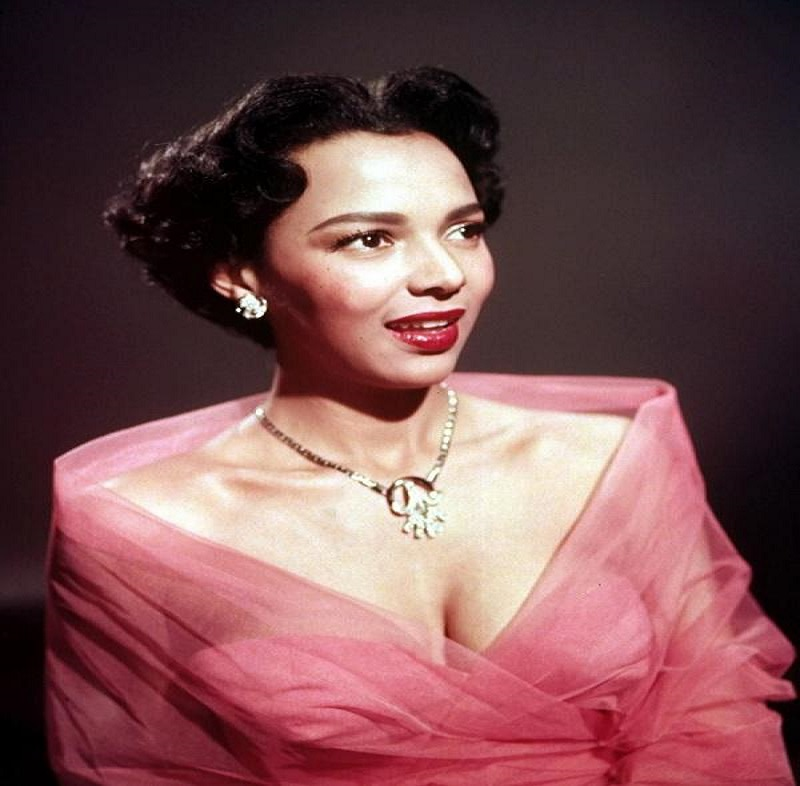
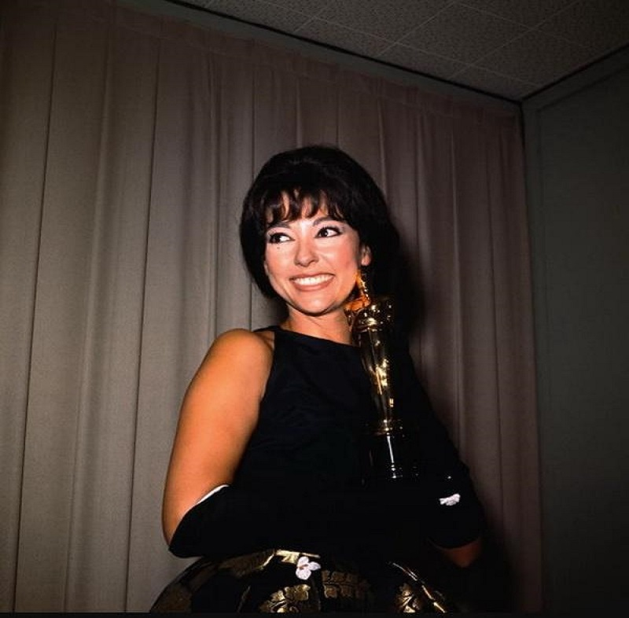
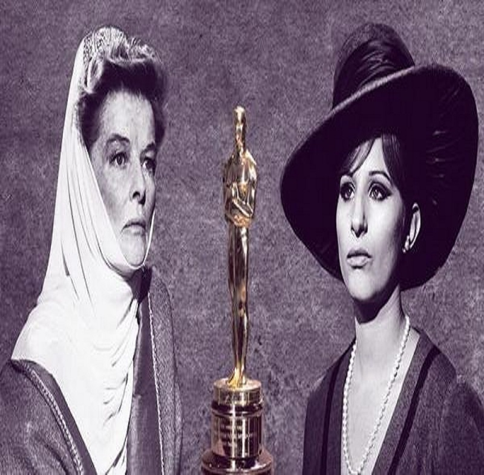
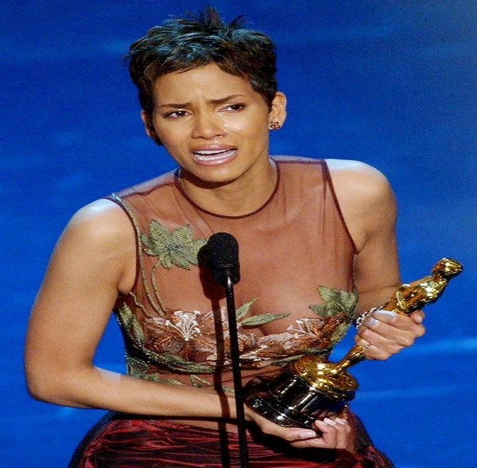
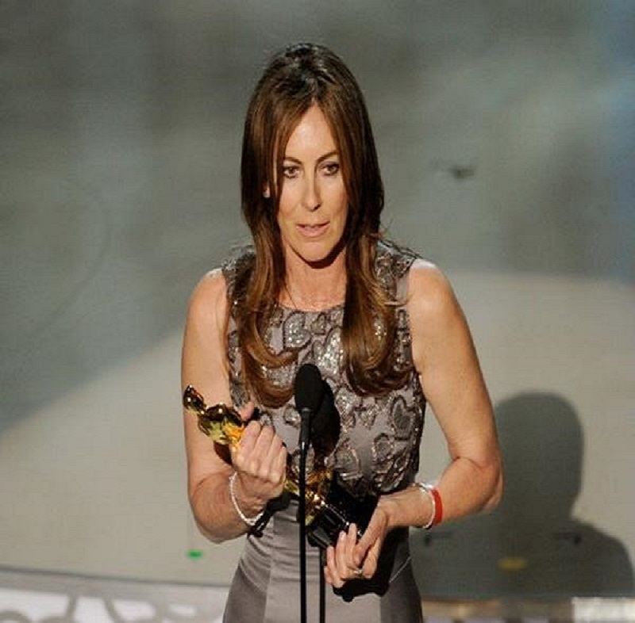
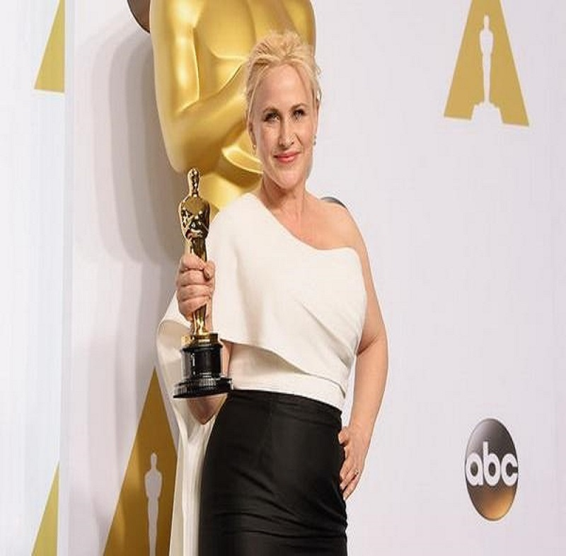
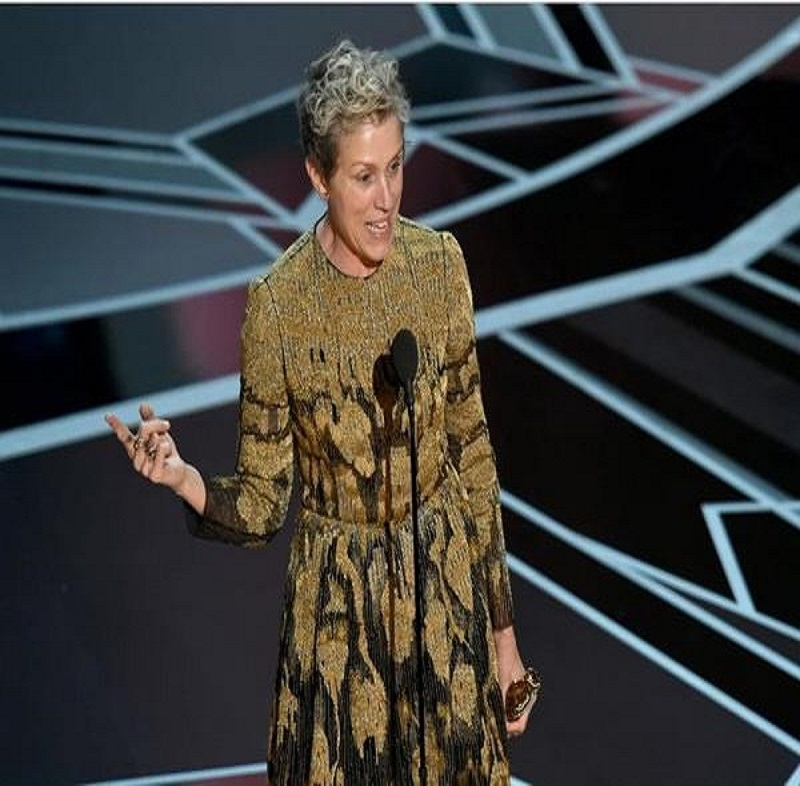
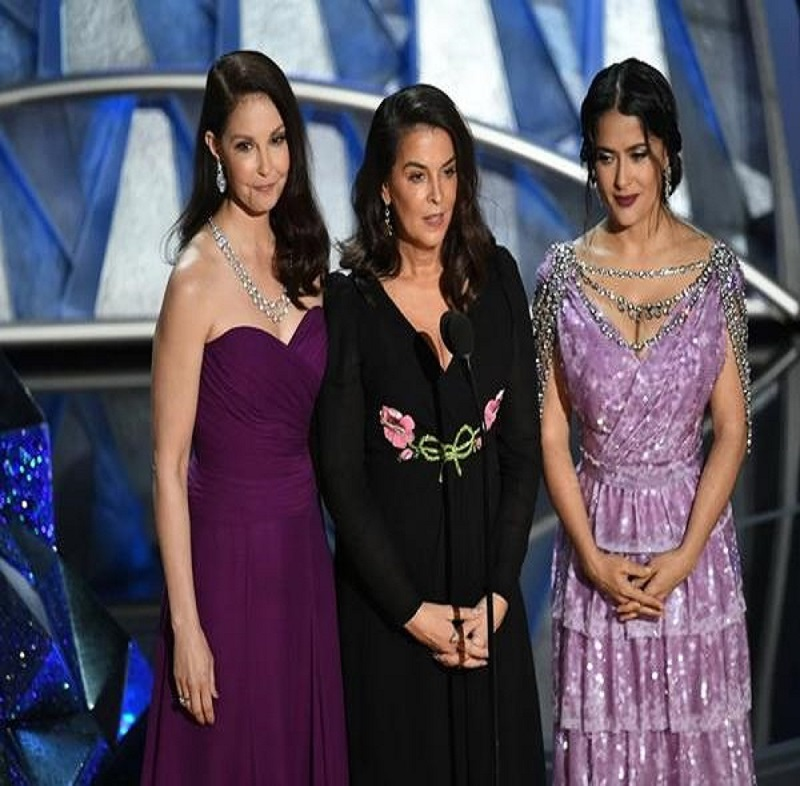
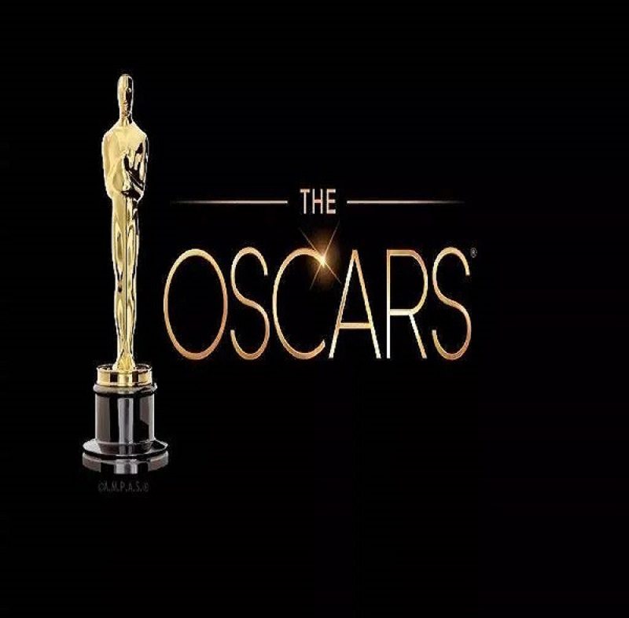

Oscar
主页
历史时刻
奥斯卡的历史性时刻

1954年多萝西·丹德里奇提名奥斯卡最佳女主角奖
1954年，多萝西·丹德里奇因电影《卡曼·琼斯》的角色而被提名为奥斯卡最佳女演员，她成为了首位被提名此奖的黑人女性。虽然她当晚没有获胜，但在当时的社会环境下，这对于有色人种女性来说是一个跨时代的时刻。在多萝西·丹德里奇被提名一年后，被称为美国“民权之母”的罗莎·帕克斯在亚拉巴马州蒙哥马利市公共汽车上拒绝给白人让座，激发了蒙哥马利市黑人的非暴力抵制行动，这一活动被一些学者视为美国民权运动的起点。

1962年丽塔·莫雷诺获得最佳女配角奖
丽塔·莫雷诺因其在《西区故事》中扮演的角色而获得奥斯卡最佳女配角奖，她成为第一个赢得奥斯卡表演奖的拉丁裔。在1962年的奥斯卡颁奖典礼上，她拿着最佳女配角的奖杯只说了十五秒长的获奖感言，因为她一直觉得“我不可能会赢”。多年后，丽塔·莫雷诺成为第一位赢得艾美奖、格莱美奖、奥斯卡奖和托尼奖的西班牙裔演员。现年87岁的丽塔·莫雷诺一直在与刻板印象作斗争，她在接受媒体采访时曾说过：“我不反对扮演一位西班牙裔美国人，但我不可能接受任何有刻板印象的角色。”

1969年芭芭拉·史翠珊和凯瑟琳·赫本成为“双黄蛋”最佳女主角
1969年，芭芭拉·史翠珊和凯瑟琳·赫本一起获得了奥斯卡最佳女主角。奥斯卡历史上总共出现了六次“双黄蛋”奖项，但只有芭芭拉·史翠珊和凯瑟琳·赫本这一次是两位女性同时获奖。芭芭拉·史翠珊在获奖感言中说道，“我非常荣幸能与无与伦比的凯瑟琳·赫本同时获得这个奖项。”这一场景让人们看到了优秀女演员们之间的惺惺相惜，为后世女演员设立了很好的榜样。女演员们更应该互相鼓励和扶持，才能在由男性主导的电影行业中获得一席之地。

2002年哈莉·贝瑞赢得最佳女主角奖
2002年，哈莉·贝瑞成为第一位获得奥斯卡最佳女演员奖的黑人女性。她紧紧握着小金人，一边激动流泪一边说道，“这一刻不仅是我获得了这个奖，而且是意味着每个默默无闻的有色人种女性都获得了机会。从今晚开始，这个门被打开了。”令人失望的是，在接下来的16年里，没有黑人女性再次赢得过奥斯卡最佳女演员。

2010年凯瑟琳·比奇洛获得最佳导演奖
直到2010年，奥斯卡历史上才有一位女导演因为她的辛勤工作而赢得了最佳导演奖。《拆弹部队》的导演凯瑟琳·比奇洛打败《阿凡达》的导演卡梅隆，一举获得奥斯卡最佳导演奖。奥斯卡历史上总共有五名女导演提名了最佳导演奖，自从凯瑟琳·比奇洛获得胜利以来，只有格蕾塔·葛韦格凭借《伯德小姐》在2018年入围了最佳导演奖。

2015年帕特里夏·阿奎特呼吁同工同酬的必要性
帕特里夏·阿奎特因为在《少年时代》的精彩表演，在2015年获得奥斯卡最佳女配角奖，她利用发表获奖感言的机会，来呼吁大家关注男女工资差异的问题，希望社会能早日实现男女同工同酬。她对着喧嚣的掌声说道，“现在是我们应该实现男女同工同酬的时候了，美国女性应该获得与男性一样的权利。”

2018年弗兰西斯·麦克多蒙德力挺“Inclusion Rider(包容性附加条款）”
2018年，弗兰西斯·麦克多蒙德凭借《三块广告牌》获得奥斯卡最佳女主角。弗兰西斯·麦克多蒙德在发表得奖宣言的时候突然放下了自己的奖杯，开始为女性发声，为更平等公正的环境发声，呼吁大家更多地在合同中使用“Inclusion Rider（包容性附加条款）”条约，确保女性、非白人种族、LGBT和残疾人士等都能获得平等的工作机会”。

2018年“哈维·韦恩斯坦性丑闻事件”的三名受害女星以颁奖人身份上台
2018年，奥斯卡让三位公开指控美国著名电影制作人哈维·韦恩斯坦性骚扰的女星安娜贝拉·席欧拉、艾希莉·贾德、莎玛·海耶克以颁奖人的身份上台发声，支持当时世界范围内进行得如火如荼的反性骚扰运动。艾希莉·贾德表示：“我们目前看到的变化是由强有力的新声音推动向前的，这是不同于以往的声音，现在是时候一起发出我们的声音了。”

2021年奥斯卡颁奖典礼将推迟举行
据《路透社》报道，由于新冠疫情对全球电影行业造成的巨大破坏， 2021年奥斯卡颁奖典礼正式宣布推迟到4月25日举行。 美国电影艺术与科学学院在一份最新声明中表示，原定于明年2月28日举行的第93届奥斯卡颁奖典礼将推迟到2021年4月25日举行。获得奥斯卡提名的电影上映最后期限，也从2020年12月31日延长到2021年2月28日。 同时期待已久的奥斯卡电影博物馆开馆也被推迟，从今年12月14日推迟到明年4月30日。

{kind=link}
{kind=link}
{kind=link}
{kind=link}
{kind=link}
{kind=link}
{kind=link}
{kind=link}
{kind=link}